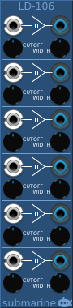

The LD-106 provides 6 line drivers designed to take analog signals and convert them to clean digital signals. It features optional Schmitt triggers to reduce jitter in noisy signals.
The voltage range of the digital gates can be configured from the context menu. The device will output at the full range of the configured settings. The line drivers can be used to convert digital signals from one voltage range to another.
The two control knobs are CUTOFF which is the midpoint of the input signal range. Inputs above the CUTOFF are logical high signals, and those below the CUTOFF are logical low signals. The WIDTH controls the hysteresis of the Schmitt Trigger.
The range of the CUTOFF is -10V to +10V. The range of the WIDTH is 0V to 5V and this width is applied BOTH above and below the CUTOFF. If the WIDTH is set to 0V, no hysteresis is applied.
The LD-103 provides three line drivers in a small form factor. The CUTOFF and WIDTH controls are labelled C and W respectively. Otherwise the functionality is as for the LD-106 above